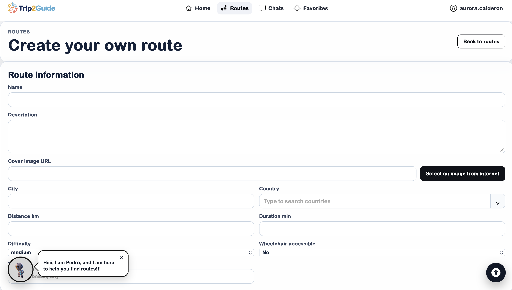
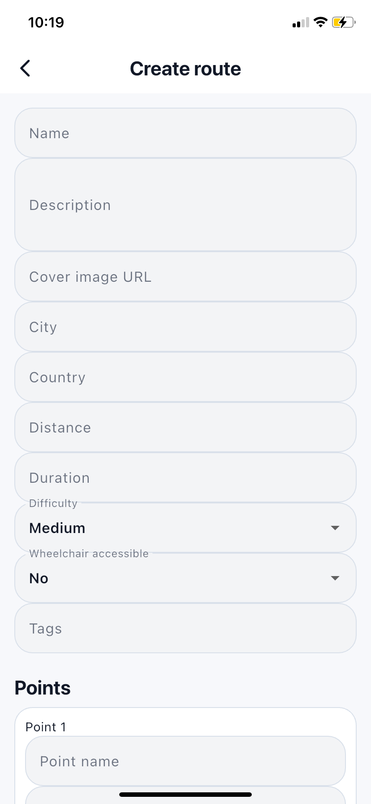
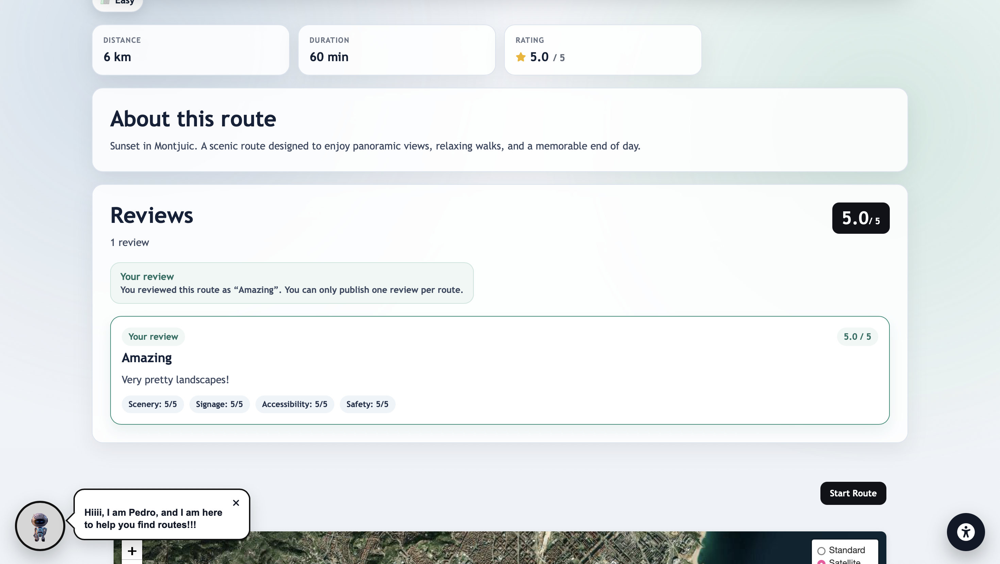
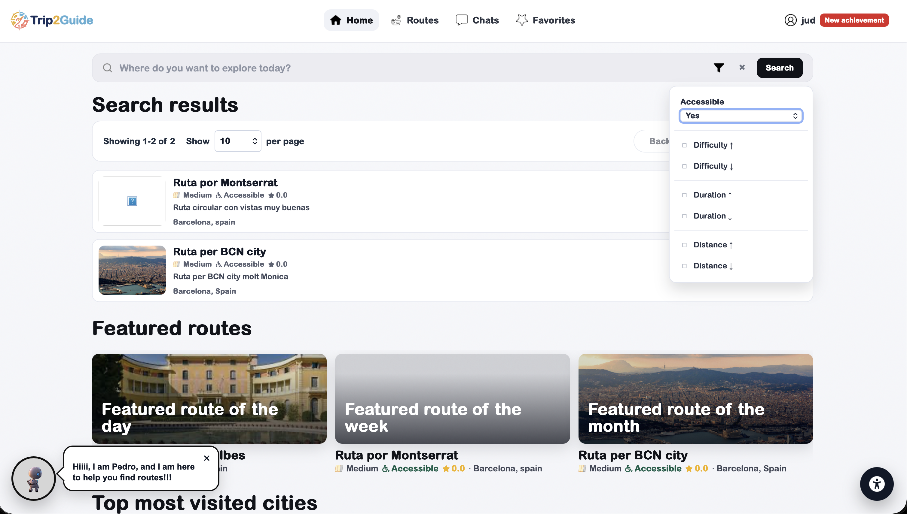
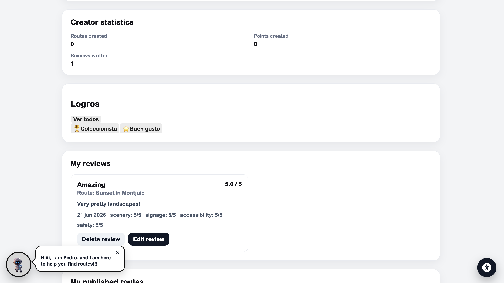
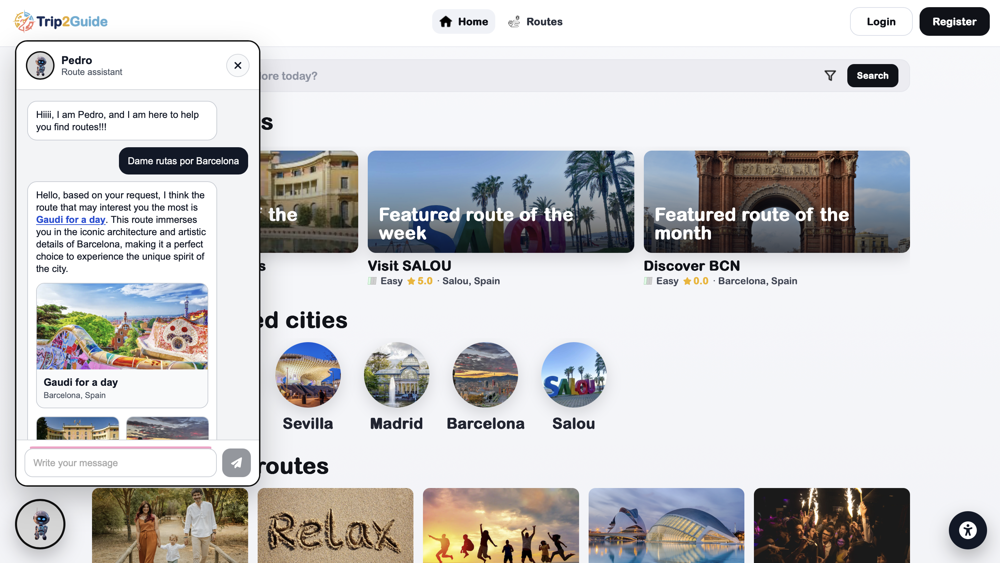
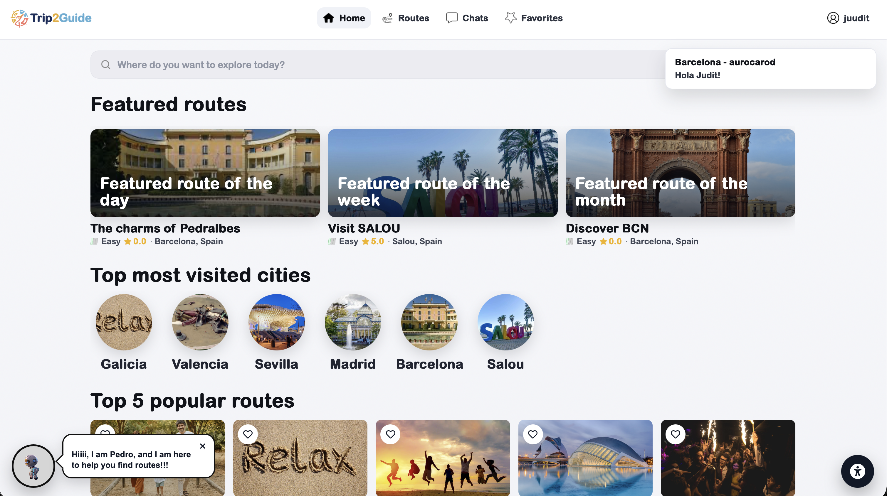
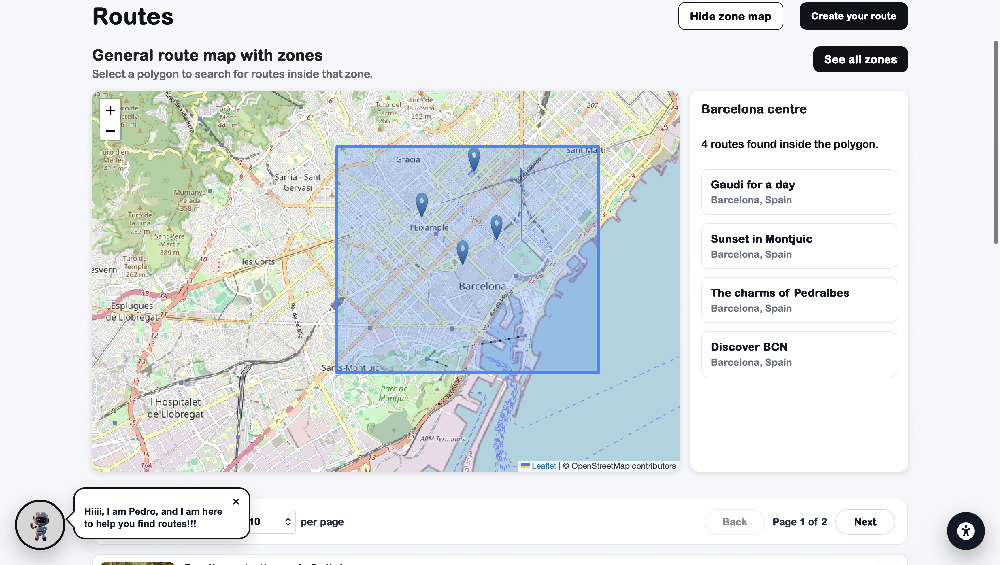

Sprint 4: Rutes, accessibilitat, IA i monitoratge
Període del Sprint: Fins al 22 de juny de 2026.
En aquest Sprint 4 hem continuat ampliant les funcionalitats principals del projecte,
millorant tant l'experiència d'usuari com la capacitat de gestió i seguiment de l'aplicació.
Durant aquest sprint hem treballat en la creació de rutes des de la WebApp i des de
l'App mòbil, el sistema de ressenyes i ratings, noves millores
d'accessibilitat, les insígnies, el suggeriment de rutes amb
IA, les notificacions push, la integració de Matomo
i el mapa general de rutes.
Creació de rutes des de la WebApp i l'App mòbil
En aquest sprint hem afegit la possibilitat de crear rutes tant des de la
WebApp com des de l'App mòbil. D'aquesta manera,
els usuaris poden preparar i compartir les seves pròpies rutes des del dispositiu
que els sigui més còmode en cada moment.
Aquesta millora fa que l'aplicació sigui més oberta i participativa, ja que qualsevol usuari pot contribuir amb noves propostes. Així, el conjunt de rutes disponibles pot anar creixent amb experiències reals aportades per la comunitat.
Sistema de ressenyes i ratings
També hem incorporat un sistema de ressenyes i valoracions per facilitar la interacció
entre usuaris. Ara, els usuaris poden valorar les rutes i deixar la seva opinió sobre l'experiència
realitzada.
Aquesta funcionalitat ajuda a generar confiança dins de la plataforma, ja que altres usuaris poden consultar experiències prèvies abans de decidir quina ruta volen fer. A més, els ratings permeten identificar més fàcilment les rutes millor valorades per la comunitat.
Accessibilitat: idioma i rutes adaptades
En aquest sprint hem continuat millorant l'accessibilitat de l'aplicació. Per una banda,
hem incorporat el canvi d'idioma, fent que la plataforma sigui més adaptable a diferents
perfils d'usuari.
Per altra banda, hem afegit la possibilitat de filtrar rutes aptes per fer amb cadira de rodes. Aquesta millora és especialment important perquè facilita que persones amb mobilitat reduïda puguin trobar rutes adequades a les seves necessitats de manera més directa i clara.
Insígnies i assoliments
També hem desenvolupat un sistema d'insígnies, pensat com un mecanisme de gamificació
dins de l'aplicació. Aquest sistema permet reconèixer determinades accions o fites aconseguides pels
usuaris durant l'ús de la plataforma.
Les insígnies aporten un component motivacional i fan que l'experiència sigui més dinàmica. A més, poden ajudar a fomentar la participació continuada i donar més valor a les accions realitzades pels usuaris dins de l'aplicació.
Suggeriment de ruta amb IA
Una altra funcionalitat destacada ha estat el suggeriment de rutes amb intel·ligència artificial.
Aquesta característica permet oferir recomanacions més personalitzades als usuaris, ajudant-los a descobrir
rutes que encaixin millor amb les seves preferències o necessitats.
Aquesta integració fa que l'aplicació no només mostri informació, sinó que també pugui ajudar l'usuari a prendre decisions i a trobar una ruta adequada d'una manera més intel·ligent.
Notificacions push amb Firebase Cloud Messaging
Durant aquest sprint també hem treballat en les notificacions push mitjançant
Firebase Cloud Messaging. Aquesta funcionalitat permet enviar avisos directes als usuaris
i millorar la comunicació entre l'aplicació i la persona usuària.
Les notificacions push poden ser útils per informar sobre novetats, interaccions, recordatoris o altres esdeveniments rellevants dins de la plataforma, fent que l'experiència sigui més activa i connectada.
Monitoratge amb Matomo
Per analitzar millor l'ús real de l'aplicació, hem incorporat Matomo com a eina de
monitoratge. Aquesta integració ens permet obtenir informació sobre com s'utilitza la plataforma i detectar
possibles punts de millora.
El monitoratge ens ajuda a prendre decisions basades en dades reals, identificant quines funcionalitats tenen més ús i en quines parts pot ser necessari revisar l'experiència d'usuari o el funcionament general de l'aplicació.
Mapa general de rutes
Finalment, hem afegit un mapa general de rutes, que permet visualitzar les diferents
rutes disponibles dins de la plataforma de manera global.
Aquesta vista facilita l'exploració del contingut i millora la navegació, ja que l'usuari pot localitzar rutes de forma més intuïtiva i contextualitzada geogràficament.








Captures del Sprint
Les captures de pantalla corresponents a les funcionalitats desenvolupades durant aquest sprint
s'afegiran més endavant. Quan estiguin disponibles, es podran incorporar al carrusel mantenint el
mateix format visual utilitzat en el Sprint 3.
Metodologia i organització del Sprint
Hem continuat treballant seguint una metodologia àgil, repartint les tasques entre les diferents
parts del projecte: Backend, Backoffice, WebApp,
App mòbil, accessibilitat, monitoratge i integracions externes.
Aquest sprint ha estat especialment rellevant perquè hem afegit funcionalitats que fan que el projecte sigui més complet, participatiu i accessible. La creació de rutes, les ressenyes, les insígnies, les notificacions, el mapa general i el suggeriment amb IA milloren directament l'experiència de l'usuari.
Tornar al blog